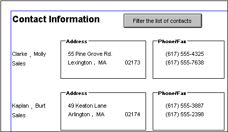

This section describes adding controls to enhance your DataWindow object.
You can add columns that are included in the data source to a DataWindow object. When you first create a DataWindow object, each of the columns in the data source is automatically placed in the DataWindow object. Typically, you would add a column to restore one that you had deleted from the DataWindow object, or to display the column more than once in the DataWindow object.
 Adding columns not previously retrieved to the data
source To specify that you want to retrieve a column not previously
retrieved (that is, add a column to the data source), you must modify
the data source.
Adding columns not previously retrieved to the data
source To specify that you want to retrieve a column not previously
retrieved (that is, add a column to the data source), you must modify
the data source.
 To add a column from the data source to a DataWindow object:
To add a column from the data source to a DataWindow object:
Select Insert>Control>Column from the menu bar.
Click where you want to place the column.
The Select Column dialog box displays, listing all columns included in the data source of the DataWindow object.
Select the column and click OK.
If you want to add a column from the DataWindow definition to a DataWindow, always use Insert>Control>Column. You might see unexpected results if you copy a column from one DataWindow object to another if they both reference the same column but the column order is different. This is because copying a column copies a reference to the column's id in the DataWindow definition.
Suppose d_first and d_second both have first_name and last_name columns, but first_name is column 1 in d_first and column 2 in d_second. If you delete the first_name column in d_second and paste column 1 from d_first in its place, both columns in d_second display the last_name column in the Preview view, because both columns now have a column id of 1.
When PowerBuilder generates a basic DataWindow object from a presentation style and data source, it places columns and their headings in the DataWindow painter. You can add text anywhere you want to make the DataWindow object easier to understand.
 To add text to a DataWindow object:
To add text to a DataWindow object:
Select Insert>Control>Text from the menu bar.
Click where you want the text.
PowerBuilder places the text control in the Design view and displays the word text.
Type the text you want.
(Optional) Change the font, size, style, and alignment for the text using the StyleBar.
 Displaying an ampersand character If you want to display an ampersand character, type a double
ampersand in the Text field. A single ampersand causes the next
character to display with an underscore because it is used to indicate
accelerator keys.
Displaying an ampersand character If you want to display an ampersand character, type a double
ampersand in the Text field. A single ampersand causes the next
character to display with an underscore because it is used to indicate
accelerator keys.
When you place text in a DataWindow object, PowerBuilder uses the font and style (such as boldface) defined for the application's text in the Application painter. You can override the text properties for any text in a DataWindow object.
For more about changing the application's default text font and style, see Chapter 5, "Working with Targets."
You can add the following drawing controls to a DataWindow object to enhance its appearance:
 To place a drawing control in a DataWindow object:
To place a drawing control in a DataWindow object:
Select the drawing control from the Insert>Control menu.
Click where you want the control to display.
Resize or move the drawing control as needed.
Use the drawing control's Properties view to change its properties as needed.
For example, you might want to specify a fill color for a rectangle or thickness for a line.
To visually enhance the layout of a DataWindow object, you can add a group box. A group box is a static frame used to group and label a set of controls in a DataWindow object. The following example shows two group boxes in a report (nonupdatable DataWindow object). The Address group box groups address information and the Phone/Fax group box groups telephone numbers.

 To add a group box to a DataWindow object:
To add a group box to a DataWindow object:
Select Insert>Control>Group Box from the menu bar and click in the Design view.
With the group box selected, type the text to display in the frame.
Move and resize the group box as appropriate.
You can place pictures, such as your company logo, in a DataWindow object to enhance its appearance. If you place a picture in the header, summary, or footer band of the DataWindow object, the picture displays each time the content of that band displays. If you place the picture in the detail band of the DataWindow object, it displays in each row.
 To place a picture in a DataWindow object:
To place a picture in a DataWindow object:
Select Insert>Control>Picture from the menu bar.
Click where you want the picture to display.
The Select Picture dialog box displays.
Use the Browse button to find the file or enter a file name in the File Name box. Then click Open.
The picture must be a bitmap (BMP), runlength-encoded (RLE), Windows metafile (WMF), Graphics Interchange Format (GIF), or Joint Photographic Experts Group (JPEG) file.
Display the pop-up menu and select Original Size to display the bitmap in its original size.
You can use the mouse to change the size of the bitmap in the DataWindow painter.
Click the Invert Image check box on the General page of the Properties view to display the picture with its colors inverted.
To display a different picture for each row of data, retrieve a column containing picture file names from the database.
For more information, see "Specifying additional properties for character columns".
To compute a picture name at runtime, use the Bitmap function in the expression defining a computed field. If you change the bitmap in the Picture control in a DataWindow object, you need to reset the original size property. The property automatically reverts to the default setting when you change the bitmap.
To use a picture to indicate that a row has focus at runtime, use the SetRowFocusIndicator function.
You can use computed fields in any band of the DataWindow object. Typical uses with examples include:
When creating a DataWindow object, you can define computed columns and computed fields as follows:
When you define the computed column in the SQL Select painter, the value is calculated by the DBMS when the data is retrieved. The computed column's value does not change until data has been updated and retrieved again.
When you define the computed field in the DataWindow painter, the value of the column is calculated in the DataWindow object after the data has been retrieved. The value changes dynamically as the data in the DataWindow object changes.
Consider a DataWindow object with four columns: Part number, Quantity, Price, and Cost. Cost is computed as Quantity * Price.
| Part # | Quantity | Price | Cost |
|---|---|---|---|
| 101 | 100 | 1.25 | 125.00 |
If Cost is defined as a computed column in the SQL Select painter, the SELECT statement is as follows:
SELECT part.part_num,
part.part_qty,
part.part_price,
part.part_qty * part.part_price
FROM part;
If the user changes the price of a part in the DataWindow object in this scenario, the cost does not change in the DataWindow object until the database is updated and the data is retrieved again. The user sees a display with the changed price but the unchanged, incorrect cost.
| Part # | Quantity | Price | Cost |
|---|---|---|---|
| 101 | 100 | 2.50 | 125.00 |
If Cost is defined as a computed field in the DataWindow object, the SELECT statement is as follows, with no computed column:
SELECT part.part_num,
part.part_qty,
part.part_price
FROM part;
The computed field is defined in the DataWindow object as Quantity * Price.
In this scenario, if the user changes the price of a part in the DataWindow object, the cost changes immediately.
| Part # | Quantity | Price | Cost |
|---|---|---|---|
| 101 | 100 | 2.50 | 250.00 |
If you want your DBMS to do the calculations on the server before bringing data down and you do not need the computed values to be updated dynamically, define the computed column as part of the SELECT statement.
If you need computed values to change dynamically, define computed fields in the DataWindow painter Design view, as described next.
 To define a computed field in the DataWindow painter Design
view:
To define a computed field in the DataWindow painter Design
view:
Select Insert>Control>Computed Field from the menu bar.
Click where you want to place the computed field.
If the calculation is to be based on column data that changes for each row, make sure you place the computed field in the detail band.
The Modify Expression dialog box displays, listing:
Enter the expression that defines the computed field as described in "Entering the expression".
(Optional) Click Verify to test the expression.
PowerBuilder analyzes the expression.
Click OK.
You can enter any valid DataWindow expression when defining a computed field. You can paste operators, columns, and DataWindow expression functions into the expression from information in the Modify Expression dialog box. Use the + operator to concatenate strings.
You can use any built-in or user-defined global function in an expression. You cannot use object-level functions.
 DataWindow expressions You are entering a DataWindow expression, not a SQL expression
processed by the DBMS, so the expression follows the rules for DataWindow expressions. For
complete information about DataWindow expressions, see the DataWindow
Reference.
DataWindow expressions You are entering a DataWindow expression, not a SQL expression
processed by the DBMS, so the expression follows the rules for DataWindow expressions. For
complete information about DataWindow expressions, see the DataWindow
Reference.
You can refer to other rows in a computed field. This is particularly useful in N-Up DataWindow objects when you want to refer to another row in the detail band. Use this syntax:
ColumnName[x]
where x is an integer. 0 refers to the current row (or first row in the detail band), 1 refers to the next row, –1 refers to the previous row, and so on.
Table 20-1 shows some examples of computed fields.
For complete information about the functions you can use in computed fields in the DataWindow painter, see the DataWindow Reference .
PowerBuilder provides a quick way to create computed fields that summarize values in the detail band, display the current date, or show the current page number.
 To summarize values:
To summarize values:
Select one or more columns in the DataWindow object's detail band.
Select Insert>Control from the menu bar.
Select one of the options at the bottom of the cascading menu: Average, Count, or Sum.
The same options are available at the bottom of the Controls drop-down toolbar on the PainterBar.
PowerBuilder places a computed field in the summary band or in the group trailer band if the DataWindow object is grouped. The band is resized automatically to hold the computed field. If there is already a computed field that matches the one being generated, it is skipped.
 To insert a computed field for the current date
or page number:
To insert a computed field for the current date
or page number:
Select Insert>Control from the menu bar.
Select Today() or Page n of n from the options at the bottom of the cascading menu.
The same options are available at the bottom of the Controls drop-down toolbar on the PainterBar.
Click anywhere in the DataWindow object.
If you selected Today, PowerBuilder inserts a computed field containing this expression: Today(). For Page n of n, the computed field contains this expression: 'Page ' + page() + ' of ' + pageCount().
You can add buttons to the PainterBar in the DataWindow painter that place computed fields using any of the aggregate functions, such as Max, Min, and Median.
 To customize the PainterBar with custom buttons
for placing computed fields:
To customize the PainterBar with custom buttons
for placing computed fields:
Place the mouse pointer over the PainterBar and select Customize from the pop-up menu.
The Customize dialog box displays.
Click Custom in the Select palette group to display the set of custom buttons.
Drag a custom button into the Current toolbar group and release it.
The Toolbar Item Command dialog box displays.
Click the Function button.
The Function For Toolbar dialog box displays.
Select a function and click OK.
You return to the Toolbar Item Command dialog box.
Specify text and microhelp that displays for the button, and click OK.
PowerBuilder places the new button in the PainterBar. You can click it to add a computed field to your DataWindow object the same way you use the built-in Sum button.
Buttons make it easy to provide command button actions in a DataWindow object. No coding is required. The use of Button controls in the DataWindow object, instead of CommandButton controls in a window, ensures that actions appropriate to the DataWindow object are included in the object itself.
The Button control is a command or picture button that can be placed in a DataWindow object. When clicked at runtime, the button activates either a built-in or user-supplied action.
For example, you can place a button in a report and specify that clicking it opens the Filter dialog box, where users can specify a filter to be applied to the currently retrieved data.
 To add a button to a DataWindow object:
To add a button to a DataWindow object:
Select Insert>Control>Button from the menu bar.
Click where you want the button to display.
You may find it useful to put a Delete button or an Insert button in the detail band. Clicking a Delete button in the detail band will delete the row next to the button clicked. Clicking an Insert button in the detail band will insert a row following the current row.
 Be careful when putting buttons in the detail band Buttons in the detail band repeat for every row of data, which
is not always desirable. Buttons in the detail band are not visible
during retrieval, so a Cancel button in the detail band would be
unavailable when needed.
Be careful when putting buttons in the detail band Buttons in the detail band repeat for every row of data, which
is not always desirable. Buttons in the detail band are not visible
during retrieval, so a Cancel button in the detail band would be
unavailable when needed.
With the button still selected, type the text to display on the button in the PainterBar or on the General page of the Properties view.
Select the action you want to assign to the button from the Action drop-down list on the General page of the Properties view.
For information about actions, see "Actions assignable to buttons in DataWindow objects".
If you want to add a picture to the button, select the Action Default Picture check box or enter the name of the Picture file to display on the button.
If you plan to use the DataWindow object as a Web DataWindow, you can use images for default buttons provided in the dwaction.jar file. For more information, see the DataWindow Programmer's Guide .
If you want to suppress event processing when the button is clicked at runtime, select the Suppress Event check box.
When this option has been selected for the button and the button is clicked at runtime, only the action assigned to the button and the Clicked event are executed. The ButtonClicking and the ButtonClicked events are not triggered.
If Suppress Event is off and the button is clicked, the Clicked and ButtonClicking events are fired. Code in the ButtonClicking event (if any) is executed. Note that the Clicked event is executed before the ButtonClicking event.
 Do not use a message box in the Clicked event If you call the MessageBox function in
the Clicked event, the action assigned to the button is executed,
but the ButtonClicking and ButtonClicked events are not executed.
Do not use a message box in the Clicked event If you call the MessageBox function in
the Clicked event, the action assigned to the button is executed,
but the ButtonClicking and ButtonClicked events are not executed.
For an example of a DataWindow object that uses buttons, see the d_button_report object in the Code Examples application.
This DataWindow object has several buttons that have default actions, and two that have user-defined actions. In the Properties view in the DataWindow painter, these buttons are named cb_help and cb_exit. Suppress Event is off for all buttons.
In the Window painter, the Clicked and ButtonClicking events for the DataWindow control that contains d_button_report are not scripted. This is the ButtonClicked event script:
string ls_Object
string ls_win
ls_Object = String(dwo.name)
If ls_Object = "cb_exit" Then
Close(Parent)
ElseIf ls_Object = "cb_help" Then
ls_win = parent.ClassName()
f_open_help(ls_win)
End If
This script is triggered when any button in the DataWindow object is clicked.
You can choose whether to display buttons in print preview or in printed output. You control this in the Properties view for the DataWindow object (not the Properties view for the button).
 To control the display of buttons in a DataWindow object in
print preview and on printed output:
To control the display of buttons in a DataWindow object in
print preview and on printed output:
Display the DataWindow object's Properties view with the Print Specification page on top.
Select the Display Buttons – Print check box.
The buttons are included in the printed output when the DataWindow object is printed.
Select the Display Buttons – Print Preview check box.
The buttons display on the screen when viewing the DataWindow object in print preview.
Table 20-2 shows the actions you can assign to a button in a DataWindow object. Each action is associated with a numeric value (the Action DataWindow object property) and a return code (the actionreturncode event argument).
The following code in the ButtonClicked event displays the value returned by the action:
MessageBox("Action return code", actionreturncode)
Graphs are one of the best ways to present information. For example, if your application displays sales information over the course of a year, you can easily build a graph in a DataWindow object to display the information visually.
PowerBuilder offers many types of graphs and provides you with the ability to control the appearance of a graph to best meet your application's needs.
For information on using graphs, see Chapter 26, "Working with Graphs ."
The InkPicture control is designed for use on a Tablet PC and provides the ability to capture ink input from users of Tablet PCs. The control captures signatures, drawings, and other annotations that do not need to be recognized as text.
The InkPicture control is fully functional on Tablet PCs. If the Microsoft Tablet PC Software Development Kit (SDK) 1.7 is installed on other computers, InkPicture controls in DataWindow objects can accept ink input from the mouse.
For more information about ink controls and the Tablet PC, and to download the Tablet PC SDK, go to the Microsoft Tablet PC Web site
You use an InkPicture control with a table that has a blob column to store the ink data, and optionally a second blob column to provide a background image.
The InkPicture control behaves like a Picture control that accepts annotation. You can associate a picture with the control so that the user can draw annotations on the picture, then save the ink, the picture, or both. If you want to use the control to capture and save signatures, you usually do not associate a picture with it.
To add an InkPicture control to a DataWindow object, select Insert>Control>InkPicture from the menu. A dialog box displays to let you specify a blob column to store the ink data and another to use as a background image. After you specify the columns in the dialog box, the InkPicture control displays in the DataWindow and its Properties view includes a Definition tab page where you can view or change the column definitions.
You can add the following to a DataWindow object:
For information on using OLE in a DataWindow object, see Chapter 31, "Using OLE in a DataWindow Object ."
You can nest reports (nonupdatable DataWindow objects) in a DataWindow object.
For information on nesting reports, see Chapter 25, "Using Nested Reports ."